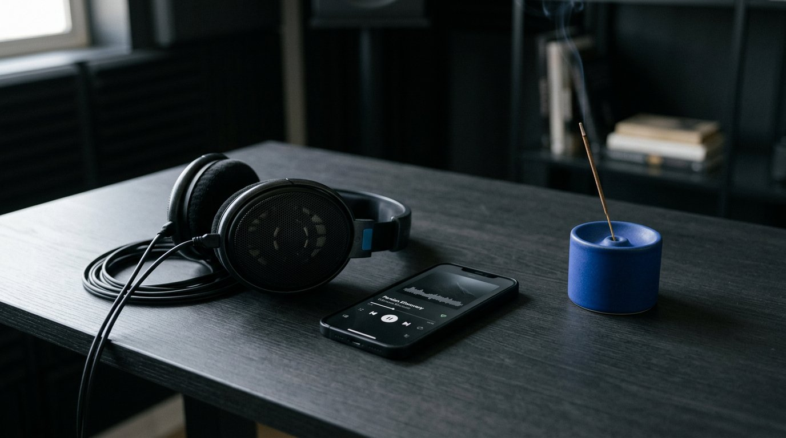
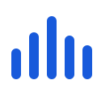
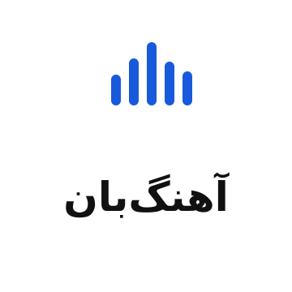
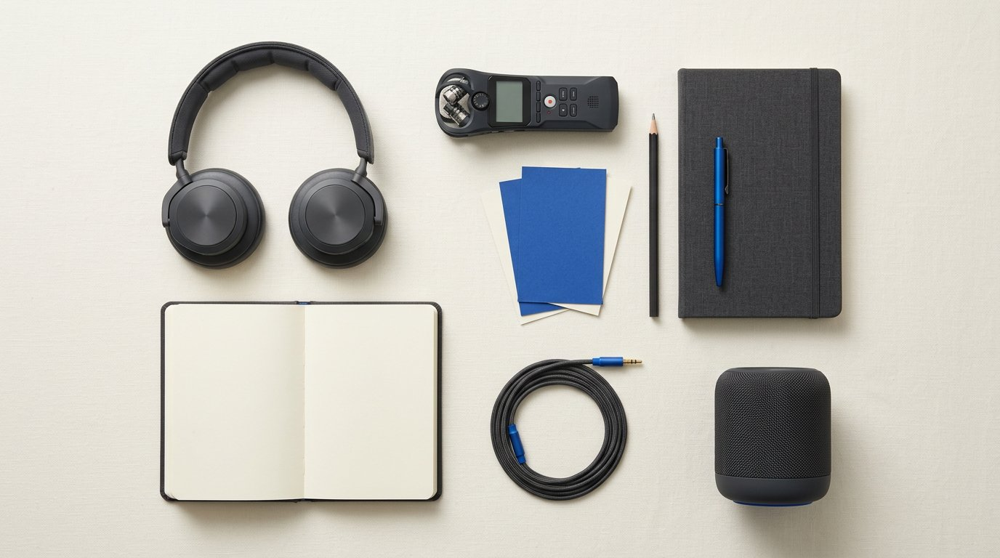
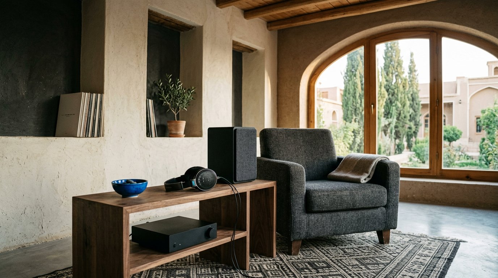
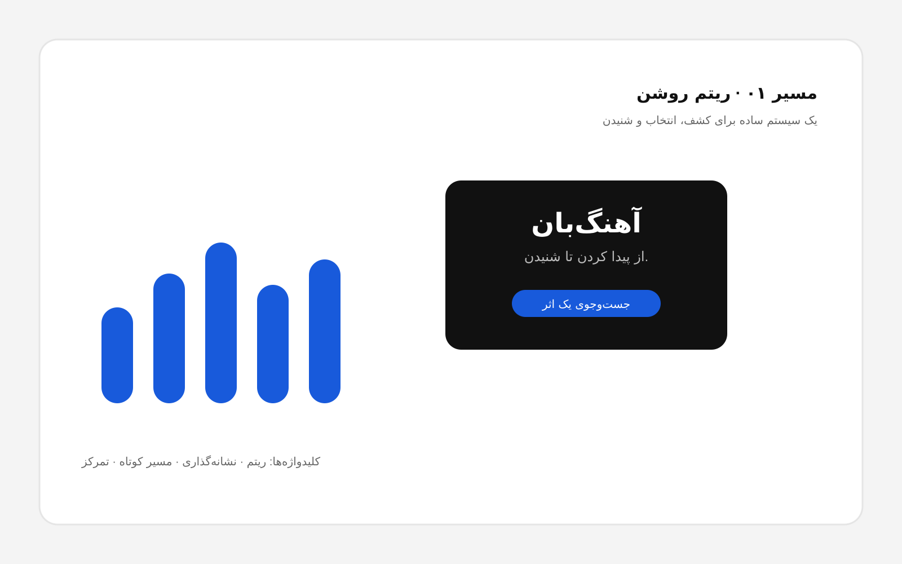
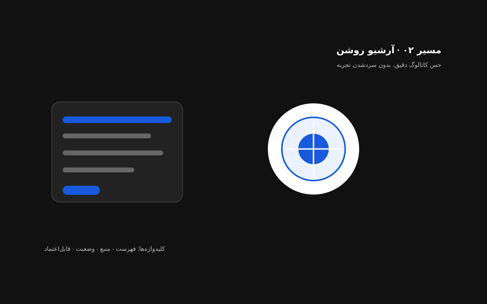
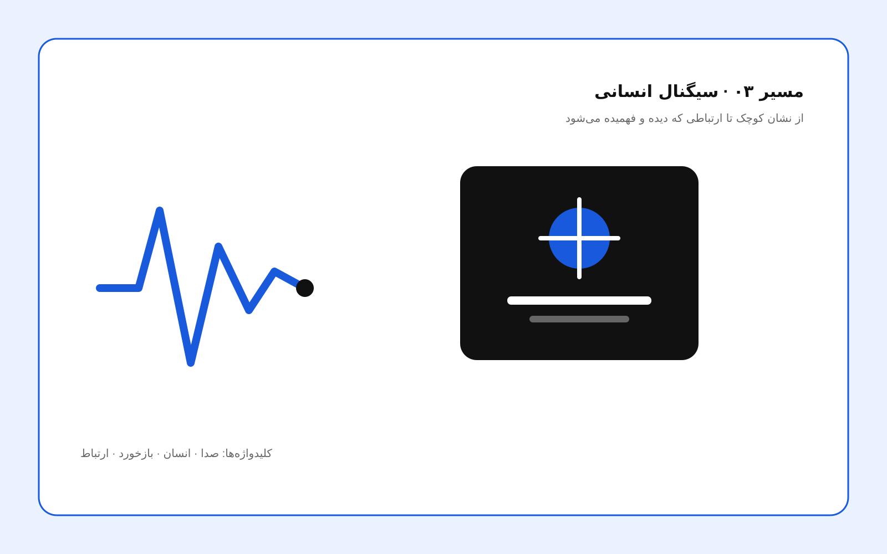

کشف و شنیدنکنتراست تیره، یک آبی کنترلشده
راهنمای هویت بصری و کلامی برای برندی فارسیمحور در حوزهٔ موسیقی؛ ساده، شیک، مینیمال و دقیق در گفتن چیزی که واقعاً آماده و مجاز است.

ahangban.ir طبق اعلام مالک خریداری شده؛ DNS، SSL، ثبت علامت، مدل تأمین محتوا و قابلیتهای محصول در این بسته تأیید نشدهاند.«آهنگبان» از آهنگ و «بان» میآید: توجه به تجربهٔ شنیدن، اطلاعات اثر و حقوق سازنده.
آهنگبان هویتی فارسیمحور برای پیدا کردن و شنیدن موسیقی و محتوای مرتبط است؛ با تجربهای ساده، اطلاعاتی قابلفهم و احترام به صاحبان اثر.
لحن با زمینه عوض میشود، اما اصل شفافیت ثابت میماند.
میخواهد با نام آهنگ، هنرمند، آلبوم یا حالوهوا سریعتر به اطلاعات درست برسد.
به معرفی دقیق اثر، مسیر تماس روشن و گزارش مسئولانهٔ وضعیت نیاز دارد.
به ثبت قلمرو، مدت، نوع استفاده، مدرک و نقطهٔ تماس نیاز دارد؛ نام در کاتالوگ کافی نیست.
پنج میلهٔ ساده، اشارهای مینیمال به ریتم و صدا هستند. لوگوتایپ با Ahangban Vazirmatn SemiBold 700 تنظیم شده تا در اندازهٔ کوچک هم خوانا و متعادل بماند؛ فایل محلی آن در بسته قرار دارد و نسخههای آمادهٔ جداگانه ارائه شدهاند.


آبی برای عملکرد و تأکید است، نه برای پرکردن همهٔ صفحه.
#185ADB#1248B2#EAF1FF#111111#FFFFFFفونت محلی برند بر پایهٔ Vazirmatn است؛ فایلها و متن مجوز در بسته قرار دارد.
| تیتر نمایشی | ۸۰۰–۹۰۰ |
| تیتر بخش | ۷۰۰–۸۰۰ |
| متن اصلی | ۴۰۰–۵۰۰ |
| متن کمکی | ۴۰۰–۵۰۰ |
در رابط و شبکهٔ اجتماعی «تو»ی کوتاه و تمیز؛ در همکاری رسمی «شما»ی محترمانه و دقیق.
«نام آهنگ، هنرمند یا آلبوم را بنویس.»
نه: «با هوش مصنوعی پیشرفته، هر چیزی را پیدا کن!»
«وضعیت این اثر در انتظار بررسی حقوق است.»
نه: «رسمی و قابل دانلود» بدون مدرک.
«برای بررسی، اطلاعات اثر و اجازهٔ مربوط به همان نوع استفاده را بفرستید.»
نه: «هر طور خواستید استفاده میکنیم.»
این تصاویر mood و جهت هنریاند، نه تصویر محصول واقعی یا مجوز استفاده از چهره/اثر دیگران.



وجود نام هنرمند یا اثر در کاتالوگ، مجوز انتشار نیست.
همهٔ مسیرها به قواعد اصلی وفادارند؛ یکی را بهعنوان جهت نهایی انتخاب و سپس با آزمون کاربر/چاپ اصلاح کنید.



| موضوع | وضعیت | اقدام مسئولانه |
|---|---|---|
| نام و علامت | هویت انتخاب شده؛ استعلام انجام نشده | جستوجوی تشابه و مشاورهٔ ثبتی |
| دامنه | طبق اعلام مالک خریداری شده | بررسی DNS، SSL، مالکیت و تمدید |
| محتوا | مدل تأمین نامشخص | تعریف طرف قرارداد، مدرک و فرایند اعتراض/حذف |
| محصول | ماکاپ و پیشنمایش؛ نه محصول فعال | تأیید قابلیتها قبل از هر ادعای پخش/دانلود/ویدئو/پادکست/ریمیکس |